BatchQC Report
Tests for checking Batch Effects
BatchQC Report
2023-03-21
Summary
Confounding
Number of samples in each Batch and Condition
| Batch a | Batch b | |
|---|---|---|
| Condition Control | 3 | 3 |
| Condition DaDaOE | 0 | 3 |
| Condition DaKD | 3 | 0 |
| Condition DaOE | 2 | 0 |
| Condition ScOE | 0 | 3 |
Measures of confounding between Batch and Condition
| Standardized Pearson Correlation Coefficient | Cramer’s V | |
|---|---|---|
| Confounding Coefficients (0=no confounding, 1=complete confounding) | 0.8859 | 0.8036 |
Variation Analysis
Variation explained by Batch and Condition

| Full (Condition+Batch) | Condition | Batch | |
|---|---|---|---|
| Min. | 1.851 | 0.847 | 0 |
| 1st Qu. | 65.78 | 61.65 | 5.311 |
| Median | 80.98 | 78.91 | 18.34 |
| Mean | 75.75 | 73.41 | 21.74 |
| 3rd Qu. | 90.71 | 89.9 | 34.52 |
| Max. | 99.98 | 99.98 | 72.5 |
P-value Analysis
Distribution of Batch and Condition Effect p-values Across Genes
| Min. | 1st Qu. | Median | Mean | 3rd Qu. | Max. | Ps<0.05 | |
|---|---|---|---|---|---|---|---|
| Batch P-values | 0.05663 | 0.2049 | 0.3915 | 0.4399 | 0.6466 | 1 | 0 |
| Condition P-values | 0 | 5.798e-05 | 0.003077 | 0.08516 | 0.05943 | 0.9989 | 0.7331 |
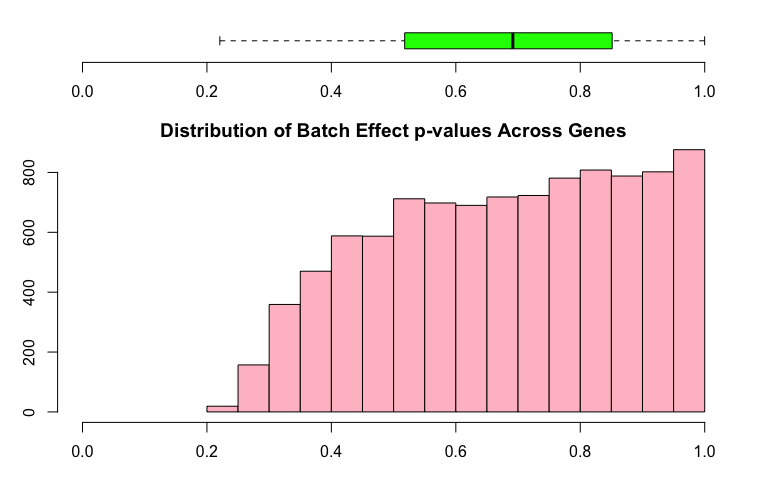
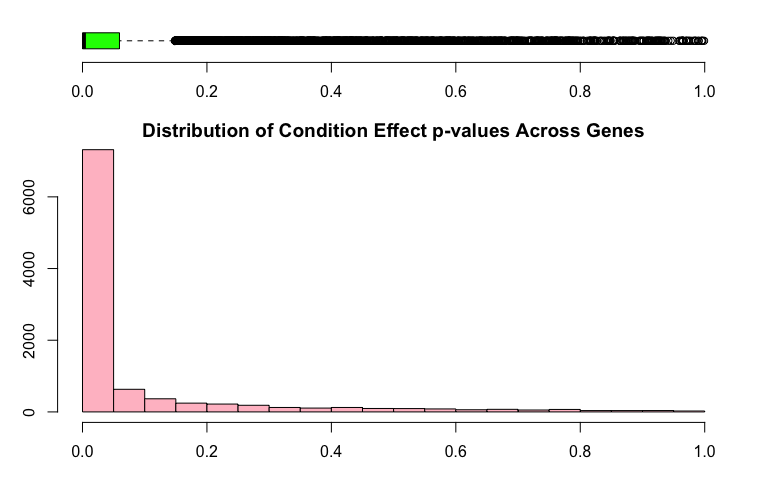
Differential Expression
Expression Plot
Boxplots for all values for each of the samples and are colored by batch membership.
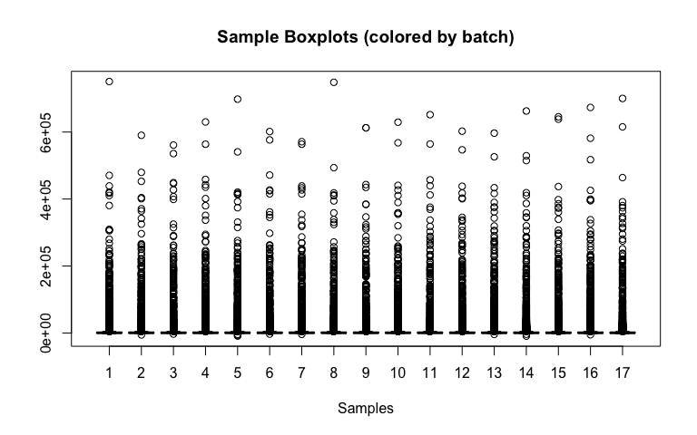
LIMMA
| Condition: DaDaOE (logFC) | Condition: DaKD (logFC) | Condition: DaOE (logFC) | Condition: ScOE (logFC) | |
|---|---|---|---|---|
| 813 | 41.69 | 36.23 | 185.7 | 4864 |
| 6710 | 174.7 | -50.77 | -29.18 | 7521 |
| 2579 | 460.5 | -145.1 | -133.4 | 27792 |
| 2418 | 303.9 | -413.9 | -79.91 | 15595 |
| 189 | -79.45 | 132.7 | 52.18 | 18121 |
| 7194 | 82.77 | -39.53 | -68.42 | 4698 |
| 1991 | 438.5 | -244.3 | 946.5 | 17900 |
| 4657 | -89.98 | -53.06 | -107.8 | 2156 |
| 9393 | 6.152 | -55.75 | 65.38 | 2575 |
| 3853 | 129.9 | -44.55 | -79.97 | 3289 |
| AveExpr | F | P.Value | adj.P.Val | |
|---|---|---|---|---|
| 813 | 967.3 | 9372 | 2.241e-20 | 2.237e-16 |
| 6710 | 1555 | 6973 | 1.26e-19 | 6.288e-16 |
| 2579 | 5845 | 6502 | 1.895e-19 | 6.304e-16 |
| 2418 | 3118 | 4674 | 1.302e-18 | 2.985e-15 |
| 189 | 3534 | 4565 | 1.495e-18 | 2.985e-15 |
| 7194 | 1068 | 3959 | 3.435e-18 | 5.327e-15 |
| 1991 | 3538 | 3902 | 3.736e-18 | 5.327e-15 |
| 4657 | 489.6 | 3299 | 9.953e-18 | 1.242e-14 |
| 9393 | 487.8 | 2905 | 2.09e-17 | 2.317e-14 |
| 3853 | 805.1 | 2808 | 2.55e-17 | 2.545e-14 |
Median Correlations
This plot helps identify outlying samples. 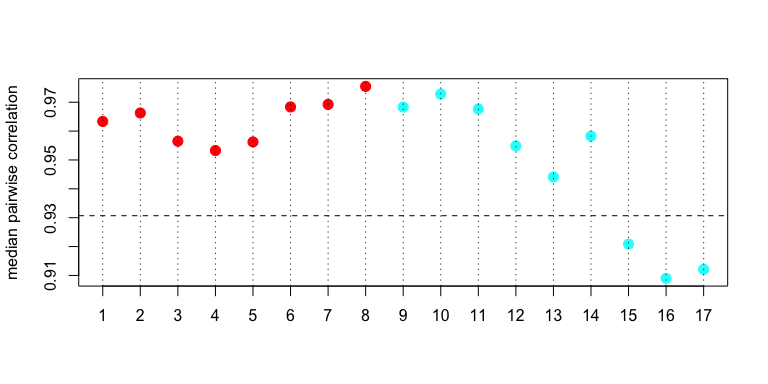
Heatmaps
Heatmap
This is a heatmap of the given data matrix showing the batch effects and variations with different conditions. 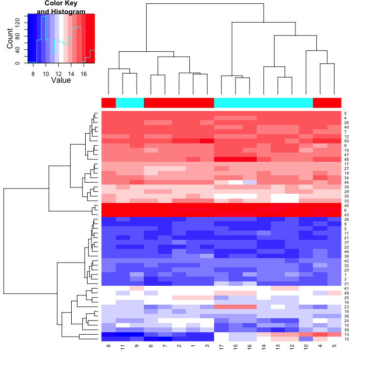
Sample Correlations
This is a heatmap of the correlation between samples. 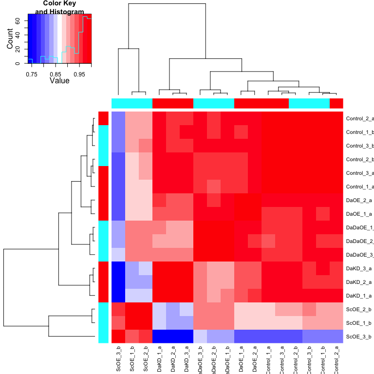
Circular Dendrogram
This is a Circular Dendrogram of the given data matrix colored by batch to show the batch effects. 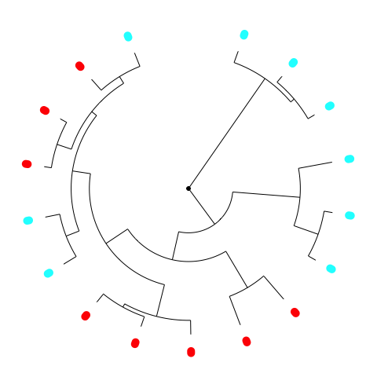
PCA: Principal Component Analysis
PCA
This is a plot of the top two principal components colored by batch to show the batch effects. 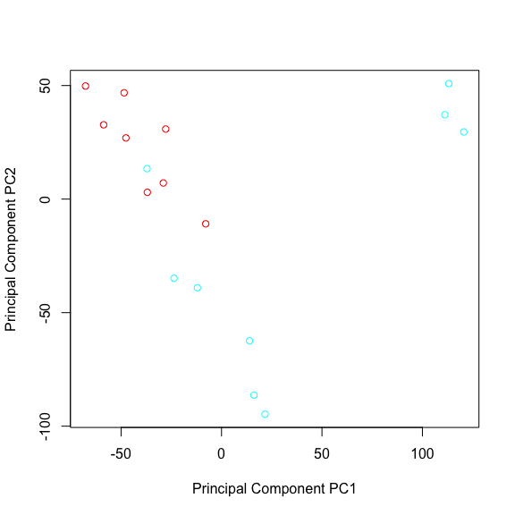
Explained Variation
| Proportion of Variance (%) | Cumulative Proportion of Variance (%) | Percent Variation Explained by Either Condition or Batch | Percent Variation Explained by Condition | Condition Significance (p-value) | Percent Variation Explained by Batch | Batch Significance (p-value) | |
|---|---|---|---|---|---|---|---|
| PC1 | 36.57 | 36.57 | 98.4 | 97.9 | 0 | 42.5 | 0.1012 |
| PC2 | 22.34 | 58.91 | 89.2 | 84.7 | 0.00012 | 23 | 0.05705 |
| PC3 | 11.61 | 70.53 | 94 | 93.6 | 0 | 9.2 | 0.39 |
| PC4 | 8.127 | 78.65 | 80.8 | 75.1 | 0.00062 | 0 | 0.09775 |
| PC5 | 4.201 | 82.85 | 30.6 | 22.2 | 0.36 | 0 | 0.2717 |
| PC6 | 3.328 | 86.18 | 24.6 | 17.2 | 0.4996 | 0.1 | 0.3219 |
| PC7 | 2.908 | 89.09 | 1.6 | 1.4 | 0.9955 | 0 | 0.8617 |
| PC8 | 2.488 | 91.58 | 3 | 2.3 | 0.9857 | 0 | 0.7866 |
| PC9 | 1.954 | 93.53 | 4 | 2.4 | 0.9771 | 0.2 | 0.6775 |
| PC10 | 1.805 | 95.34 | 1.6 | 1.6 | 0.9958 | 0 | 0.9717 |
| PC11 | 1.417 | 96.75 | 0.3 | 0.2 | 0.9999 | 0 | 0.9524 |
| PC12 | 1.301 | 98.06 | 1 | 0.8 | 0.9984 | 0 | 0.9061 |
| PC13 | 1.047 | 99.1 | 0.3 | 0.3 | 0.9998 | 0 | 0.9672 |
| PC14 | 0.8971 | 100 | 0.2 | 0.2 | 0.9999 | 0 | 0.9995 |
| PC15 | 1.581e-28 | 100 | 33.2 | 27.3 | 0.3369 | 2.2 | 0.3471 |
| PC16 | 3.437e-29 | 100 | 57 | 56.9 | 0.1653 | 25.8 | 0.9164 |
| PC17 | 2.182e-29 | 100 | 29.4 | 28.7 | 0.3979 | 0.8 | 0.7495 |
Shape
This is a heatmap plot showing the variation of gene expression mean, variance, skewness and kurtosis between samples grouped by batch to see the batch effects variation 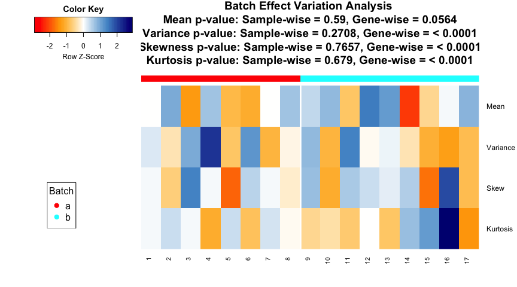
## Note: Sample-wise p-value is calculated for the variation across samples on the measure across genes. Gene-wise p-value is calculated for the variation of each gene between batches on the measure across each batch. If the data is quantum normalized, then the Sample-wise measure across genes is same for all samples and Gene-wise p-value is a good measure.Combat Plots
This is a plot showing whether parametric or non-parameteric prior is appropriate for this data. It also shows the Kolmogorov-Smirnov test comparing the parametric and non-parameteric prior distribution.
## Found 2 batches
## Adjusting for 4 covariate(s) or covariate level(s)
## Standardizing Data across genes
## Fitting L/S model and finding priors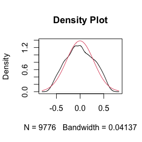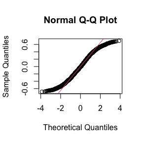

## Batch mean distribution across genes: Normal vs Empirical distribution
## Two-sided Kolmogorov-Smirnov test
## Selected Batch: 1
## Statistic D = 0.05254
## p-value = 0
##
##
## Batch Variance distribution across genes: Inverse Gamma vs Empirical distribution
## Two-sided Kolmogorov-Smirnov test
## Selected Batch: 1
## Statistic D = 0.1318
## p-value = 0Note: The non-parametric version of ComBat takes much longer time to run and we recommend it only when the shape of the non-parametric curve widely differs such as a bimodal or highly skewed distribution. Otherwise, the difference in batch adjustment is very negligible and parametric version is recommended even if p-value of KS test above is significant.SVA
Summary
## Number of Surrogate Variables found in the given data: 2